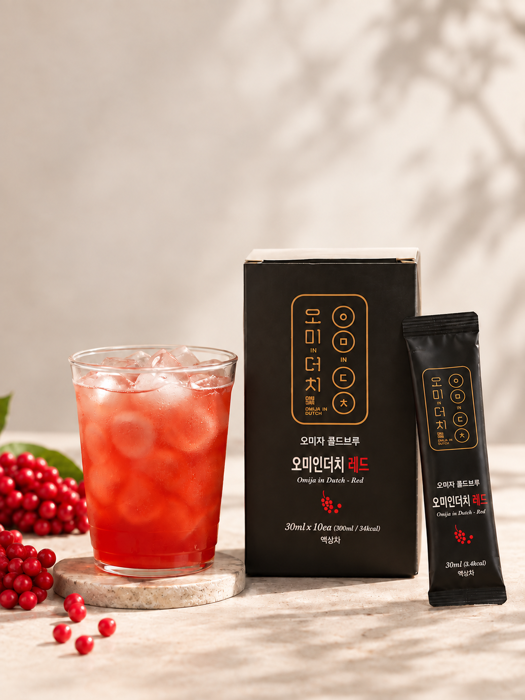
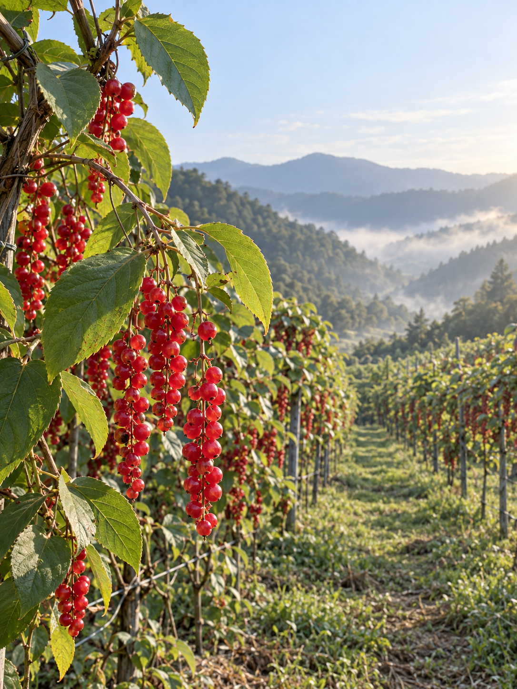
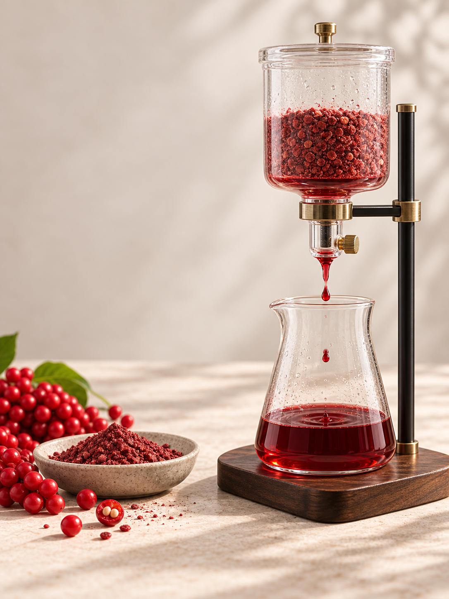
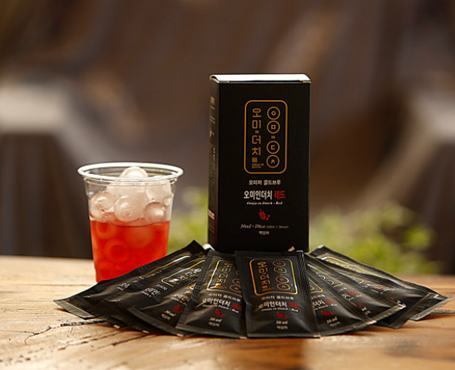
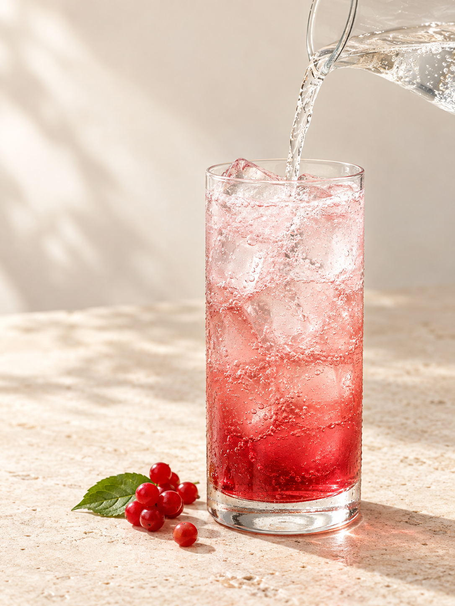
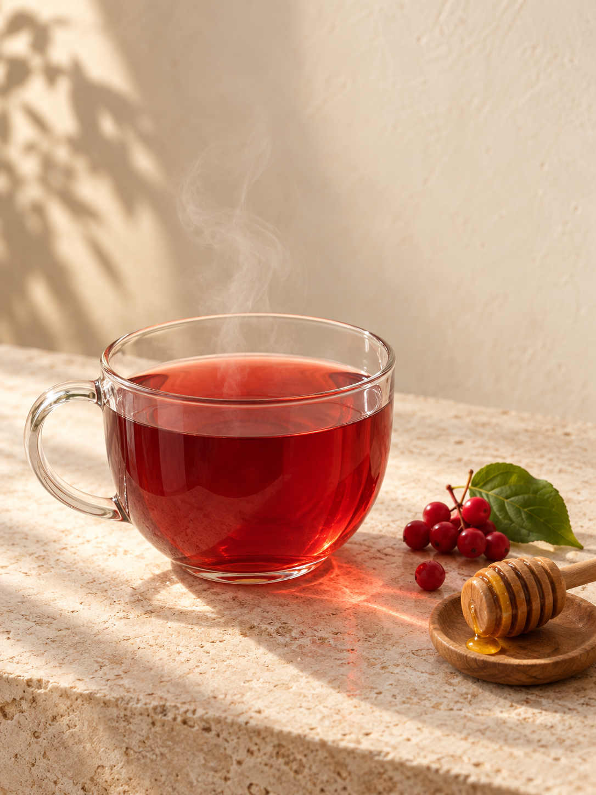
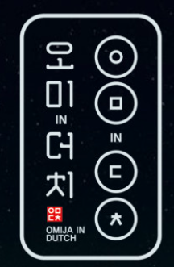

문경 오미자
OTOKKI MARKET SELECT문경에서 시작한 새로운 오미자 차

MUNGYEONG OMIZA · COLD BREW
문경 오미자를
콜드브루로 새롭게
당류 0g · 설탕 무첨가
오미자 콜드브루
CLEAR & VIVID OMIZA
달지 않아
더 선명한 오미자
전통차로 익숙했던 오미자를
콜드브루라는 새로운 방식으로
만납니다.
달콤한 오미자청이나 즙이 아닌,
오미자 본연의 향과 산뜻함을 즐길 수 있도록
현대적인 방식으로 풀어낸 오미자 차입니다.
WHY OMI IN DUTCH?
우리가 알던
오미자차와
조금 다릅니다.
진하고 달콤한 맛 대신
오미자의 향과 산뜻한 맛에 집중했습니다.
새로운 추출 방식
설탕 무첨가
간편한 개별 포장

POINT 01 · ORIGIN
대한민국 오미자의
제1주산지, 문경
문경시는 연간 약 1,500톤,
전국 오미자 생산량의 약 45%를 차지하는
대한민국 오미자 제1주산지로 소개됩니다.
※ 문경시 공식 자료 기준. 생산량과 점유율은 조사 시점에 따라 달라질 수 있습니다.
※ 문경 오미자 산지를 표현한 연출 이미지입니다.
POINT 02 · PROCESS
커피의 추출 기술을
오미자에
적용했습니다.

과육만 짜내는 방식에서
한 걸음 더
오미자를 분말 형태로 가공해
씨까지 함께 활용하고,
커피를 다뤄온 콜드브루 방식으로
천천히 추출했습니다.
강한 열보다 낮은 온도에서 추출해
오미자 원물의 향과 맛,
씨가 가진 쌉싸름한 풍미까지
섬세하게 담아내는 데 초점을 맞췄습니다.
문경 오미자→분말 가공→콜드브루 추출→30ml 액상 파우치
※ 제품의 추출 방식을 이해하기 위한 연출 이미지입니다.
POINT 03 · TASTE
설탕의 단맛 없이,
오미자의 맛 그대로
“달아서 맛있는 오미자가 아니라
오미자라서 맛있는 차.”
레몬·체리·크랜베리를
연상시키는 산뜻함
배처럼 시원하고
부드러운 여운
씨에서 이어지는
깔끔한 마무리
※ 맛과 향에 대한 느낌은 개인에 따라 다를 수 있습니다.
A NEW OMIZA EXPERIENCE
오미자청이 아닌,
오미자 콜드브루
구분
일반적인 오미자청·액상차
오미인더치
맛의 방향달콤한 맛 중심오미자 본연의 맛과 향
당류·설탕제품에 따라 다름당류 0g · 설탕 무첨가
추출 방식청·즙·액상 형태콜드브루 추출
원물 활용제품에 따라 다름분말 가공 후 씨까지 활용
음용감달콤하고 진한 편깔끔하고 산뜻하게
※ 일반 제품의 특성은 제조사 및 제품에 따라 달라질 수 있습니다.
POINT 04 · EASY PORTION
30ml씩
간편하게
한 번에 많은 양을 덜어낼 필요 없이
30ml씩 개별 포장되어 있습니다.

1 BOX30ml × 10개입총 내용량 300ml
※ 제품 연출 이미지이며, 실제 구성은 30ml × 10개입입니다.
HOW TO ENJOY
오늘은 어떤
오미자 콜드브루?
ICE
가장 깔끔하게
액상 파우치 30ml
+ 찬물 150ml + 얼음

SPARKLING
더욱 청량하게
액상 파우치 30ml
+ 탄산수 또는 사이다 150ml + 얼음

WARM
따뜻한 차 한 잔
액상 파우치 30ml
+ 따뜻한 물 150~180ml
※ 희석 비율은 취향에 맞게 조절해 주세요.
※ 음료·꿀·오미자 열매·컵은 연출 소품이며 상품에 포함되지 않습니다.
RECOMMEND FOR
이런 분께
추천합니다.
- 지나치게 달콤한 음료가 부담스러운 분
- 기존 오미자청과 다른 맛을 경험하고 싶은 분
- 오미자 본연의 향과 맛을 즐기고 싶은 분
- 커피 대신 색다른 음료가 필요한 분
- 간편하게 즐기는 오미자 제품을 찾는 분

BRAND STORY
오미자와
더치커피의 만남
오미인더치는 커피를 다뤄온 기술과 경험을 바탕으로
문경의 오미자를 새롭게 바라봤습니다.
지역의 좋은 원물에 새로운 추출 방법을 더하는 것.
그것이 오미인더치가 오미자를 보여주는 방식입니다.
OPTION
오미자 콜드브루
30ml × 10개입 / 1박스
한 포씩 꺼내 물·탄산수 등
취향에 맞게 즐겨보세요.
NUTRITION FACTS
영양정보
1포 30ml 기준 · 열량 3.4kcal
나트륨0.9mg0%
탄수화물0.8g0%
당류0g0%
지방0g0%
트랜스지방0g—
포화지방0g0%
콜레스테롤0mg0%
단백질0g0%
※ 사용자가 확인한 현재 판매 제품의 표시값입니다.
FAQ
자주 묻는 질문
일반 오미자청과 어떤 차이가 있나요?
설탕의 단맛을 중심으로 하는 일반적인 오미자청과 달리, 오미자 본연의 향과 맛을 깔끔하게 즐길 수 있도록 만든 콜드브루 방식의 오미자 차입니다.
설탕이 들어가나요?
설탕을 넣지 않았으며 제품 표시 기준 당류는 0g입니다.
그냥 마시는 제품인가요?
물이나 탄산수 등에 희석해 드시는 제품입니다. 취향에 따라 희석 비율을 조절해 주세요.
한 박스 구성은 어떻게 되나요?
30ml 개별 포장 제품이 총 10개 들어 있습니다.
PRODUCT INFORMATION
상품정보
- 상품명
- 오미인더치 오미자 콜드브루 차
- 식품유형
- 액상차
- 내용량
- 30ml × 10개입 (총 300ml)
- 원산지
- 국내산(문경)
- 원재료 및 함량
- 오미자추출액 100%
(정제수, 오미자고형분 3.6%) - 유통기한
- 제조일로부터 12개월
- 제조·판매원
- 오미인더치
- 소재지
- 경북 문경시 산북면 금천로 585-1
- 소비자상담
- 010-7560-0080
- 포장재질
- 폴리에틸렌(내면)
- 품목보고번호
- 20190562115-3
NOTICE
보관 및 섭취 시
주의사항
- 고온다습한 곳과 직사광선을 피해 보관하고, 개봉 후 즉시 섭취하십시오.
- 더운 여름철 및 장기간 보관 시에는 반드시 냉장 보관하십시오.
- 원료 성분에 의해 간혹 침전물이 생길 수 있으나 변질이 아니므로 잘 흔들어 드십시오.
- 본 제품은 공정거래위원회 고시 소비자분쟁해결기준에 따라 교환 또는 보상받을 수 있습니다.
- 부정·불량식품 신고는 국번 없이 1399입니다.